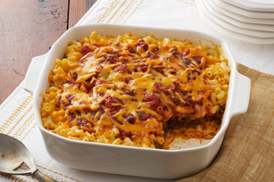

Taco Bake Recipe

Description of dish:
Taco Bake is a timeless classic. It is a culinary delight for those who consider themselves to be dinosaur nugget enthusiast.
To make this dish you will need several ingredients
Ingredients
- Two boxes of shaped Craft Mac and Cheese
- All the necessary ingredients for the craft mac and cheese
- 1.5 lbs of ground beef Feel free to choose whichever composition best fits your dietary needs
- taco seasoning feel free to choose whichever is your favorite
Directions
- Follow instructions on craft mac and cheese box
- While cooking the mace and cheese cook beef
- Season with packet and follow instructions
- Prepare glass pan
- Add 1/4 cup of sour cream to mac and cheese
- Once both are cooked we can begin layering
- Starting with mac and cheese alternate layers until out of ingredients
- Add cheese on top
- Throw in the oven on 350-400 until cheese on top is melted
- Serve and enjoy
Return to Riley's recipes
Return Home